Last updated: 2024-04-02
Checks: 6 1
Knit directory: BITHub-preprocessing/
This reproducible R Markdown analysis was created with workflowr (version 1.7.1). The Checks tab describes the reproducibility checks that were applied when the results were created. The Past versions tab lists the development history.
Great! Since the R Markdown file has been committed to the Git repository, you know the exact version of the code that produced these results.
Great job! The global environment was empty. Objects defined in the global environment can affect the analysis in your R Markdown file in unknown ways. For reproduciblity it’s best to always run the code in an empty environment.
The command set.seed(20230919) was run prior to running
the code in the R Markdown file. Setting a seed ensures that any results
that rely on randomness, e.g. subsampling or permutations, are
reproducible.
Great job! Recording the operating system, R version, and package versions is critical for reproducibility.
Nice! There were no cached chunks for this analysis, so you can be confident that you successfully produced the results during this run.
Using absolute paths to the files within your workflowr project makes it difficult for you and others to run your code on a different machine. Change the absolute path(s) below to the suggested relative path(s) to make your code more reproducible.
| absolute | relative |
|---|---|
| /home/neuro/Documents/Brain_integrative_transcriptome/BITHub-preprocessing/output/Poster_plots/Brainspan-deconvolution-region.svg | output/Poster_plots/Brainspan-deconvolution-region.svg |
| /home/neuro/Documents/Brain_integrative_transcriptome/BITHub-preprocessing/output/Poster_plots/Brainseq-deconvolution-region.svg | output/Poster_plots/Brainseq-deconvolution-region.svg |
| /home/neuro/Documents/Brain_integrative_transcriptome/BITHub-preprocessing/output/Poster_plots/GTEx-deconvolution-region.svg | output/Poster_plots/GTEx-deconvolution-region.svg |
| /home/neuro/Documents/Brain_integrative_transcriptome/BITHub-preprocessing/output/Poster_plots/HDBR-deconvolution-region.svg | output/Poster_plots/HDBR-deconvolution-region.svg |
| /home/neuro/Documents/Brain_integrative_transcriptome/BITHub-preprocessing/output/Poster_plots/PE-deconvolution-region.svg | output/Poster_plots/PE-deconvolution-region.svg |
| /home/neuro/Documents/Brain_integrative_transcriptome/BITHub-preprocessing/output/Poster_plots/Brainspan-deconvolution-period.svg | output/Poster_plots/Brainspan-deconvolution-period.svg |
| /home/neuro/Documents/Brain_integrative_transcriptome/BITHub-preprocessing/output/Poster_plots/Brainseq-deconvolution-period.svg | output/Poster_plots/Brainseq-deconvolution-period.svg |
| /home/neuro/Documents/Brain_integrative_transcriptome/BITHub-preprocessing/output/Poster_plots/GTEx-deconvolution-period.svg | output/Poster_plots/GTEx-deconvolution-period.svg |
| /home/neuro/Documents/Brain_integrative_transcriptome/BITHub-preprocessing/output/Poster_plots/HDBR-deconvolution-period.svg | output/Poster_plots/HDBR-deconvolution-period.svg |
| /home/neuro/Documents/Brain_integrative_transcriptome/BITHub-preprocessing/output/Poster_plots/PE-deconvolution-period.svg | output/Poster_plots/PE-deconvolution-period.svg |
Great! You are using Git for version control. Tracking code development and connecting the code version to the results is critical for reproducibility.
The results in this page were generated with repository version ddc9f1d. See the Past versions tab to see a history of the changes made to the R Markdown and HTML files.
Note that you need to be careful to ensure that all relevant files for
the analysis have been committed to Git prior to generating the results
(you can use wflow_publish or
wflow_git_commit). workflowr only checks the R Markdown
file, but you know if there are other scripts or data files that it
depends on. Below is the status of the Git repository when the results
were generated:
Ignored files:
Ignored: .Rproj.user/
Ignored: output/Thesis_plots/Variance/PCA/BrainSpan/brainspan-varPart-cor/
Untracked files:
Untracked: analysis/02-snRNAseq-preprocess.Rmd
Untracked: analysis/04-variation-drivers.Rmd
Untracked: output/Thesis_plots/Variance/PCA/BrainSeq/BrainSeq-PCA-mitoR.png
Untracked: output/Thesis_plots/Variance/PCA/BrainSpan/BrainSpan-PCA.png
Untracked: output/Thesis_plots/Variance/PCA/GTEx/GTEx-PCA-rRNA.png
Untracked: output/Thesis_plots/Variance/PCA/all-data.png
Unstaged changes:
Deleted: analysis/Metadata-attributes.Rmd
Modified: analysis/_site.yml
Deleted: analysis/bulk-deconvolution.Rmd
Modified: analysis/dataset-attributes.Rmd
Modified: analysis/snRNAseq-preprocess.Rmd
Deleted: analysis/variation-drives.Rmd
Modified: output/Thesis_plots/Attributes/Donor_and_sample/Aldringer_total.svg
Modified: output/Thesis_plots/Attributes/Donor_and_sample/PsychEncode_regions_total.svg
Modified: output/Thesis_plots/Metadata/BrainSeq-cor-seq-metadata.pdf
Modified: output/Thesis_plots/Metadata/GTEx-cor-seq-metadata.pdf
Modified: output/Thesis_plots/Metadata/HDBR-corplot.pdf
Note that any generated files, e.g. HTML, png, CSS, etc., are not included in this status report because it is ok for generated content to have uncommitted changes.
These are the previous versions of the repository in which changes were
made to the R Markdown (analysis/04-bulk-deconvolution.Rmd)
and HTML (docs/04-bulk-deconvolution.html) files. If you’ve
configured a remote Git repository (see ?wflow_git_remote),
click on the hyperlinks in the table below to view the files as they
were in that past version.
| File | Version | Author | Date | Message |
|---|---|---|---|---|
| Rmd | ddc9f1d | urwahnawaz | 2024-04-02 | wflow_publish(c("analysis/04-bulk-deconvolution.Rmd", "analysis/03-metadata-attributes.Rmd", |
This R markdown document contains the complete code for the analysis
of deconvolved bulk RNA-seq expression profiles for Brain Integrative
Transcriptome Hub (BITHub). All datasets were prepossessed using the
code in 01-bulk-preprocess-data.Rmd. The deconvolution
analysis itself was performed using run-decon.R code in
/code/deconvolution/ sub directory of this project. The
script generates decon-estimates.Rda file which contains
deconvolution estimates for each bulk RNA-seq datasets.
In order to re-run the scripts - make sure to change the directories to the location of where the input files for preprocessing are stored. All directories are defined in each dataset section.
All other files are stored within the data folder of this R workflow directory.
CIBERSORT is used for the analysis, and MultiBrain signatures generated in Sutton et al (2022) are used for signatures. The performance of the deconvolution analysis was evaluated using a goodness-of-fit (r) measurement, which is based on the Pearson’s correlation coefficient between the expression data and measured expression data.
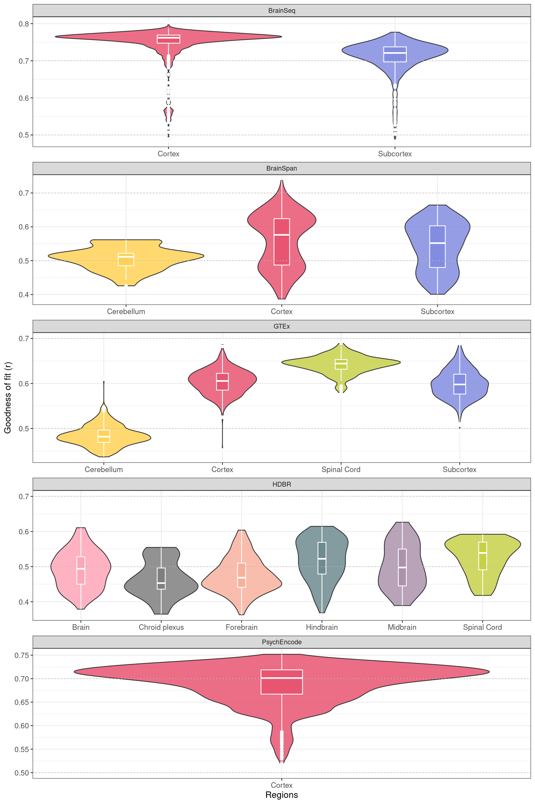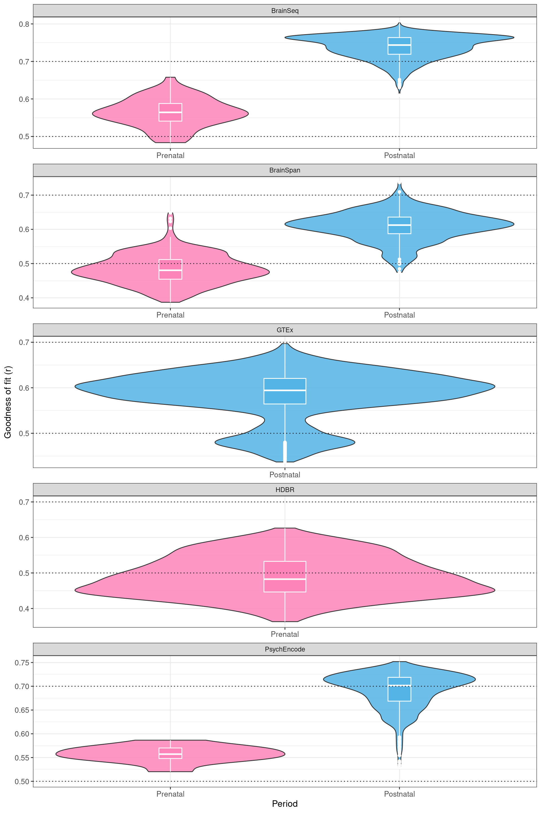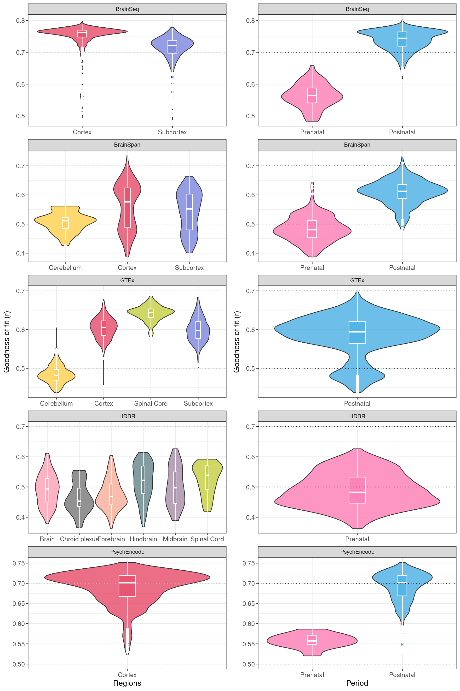
[1] 0.4825263[1] 0.6266852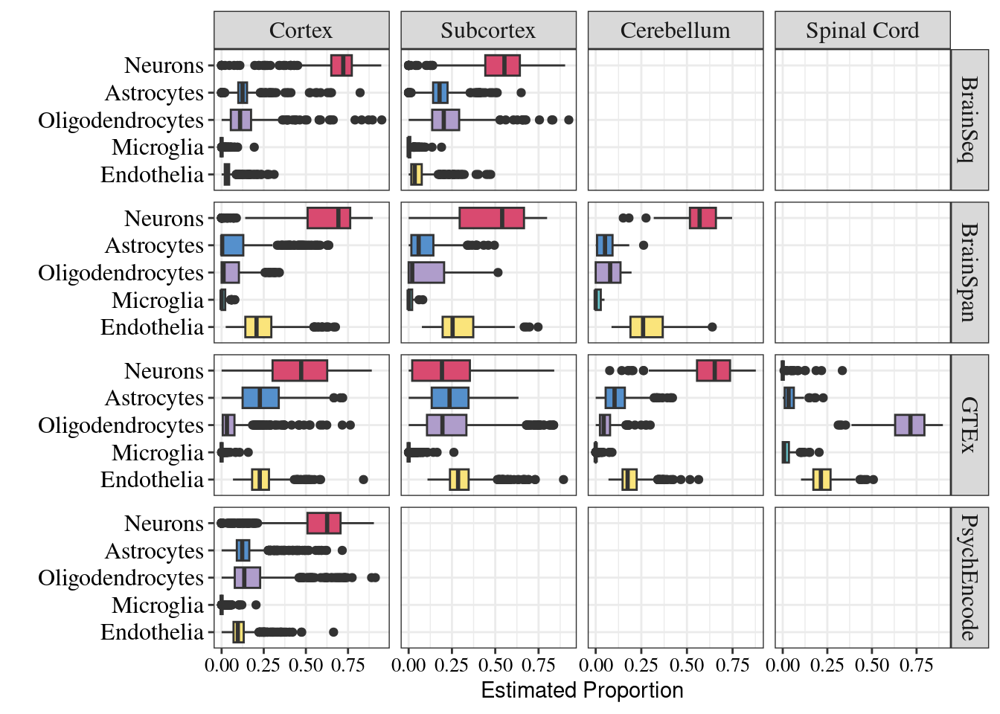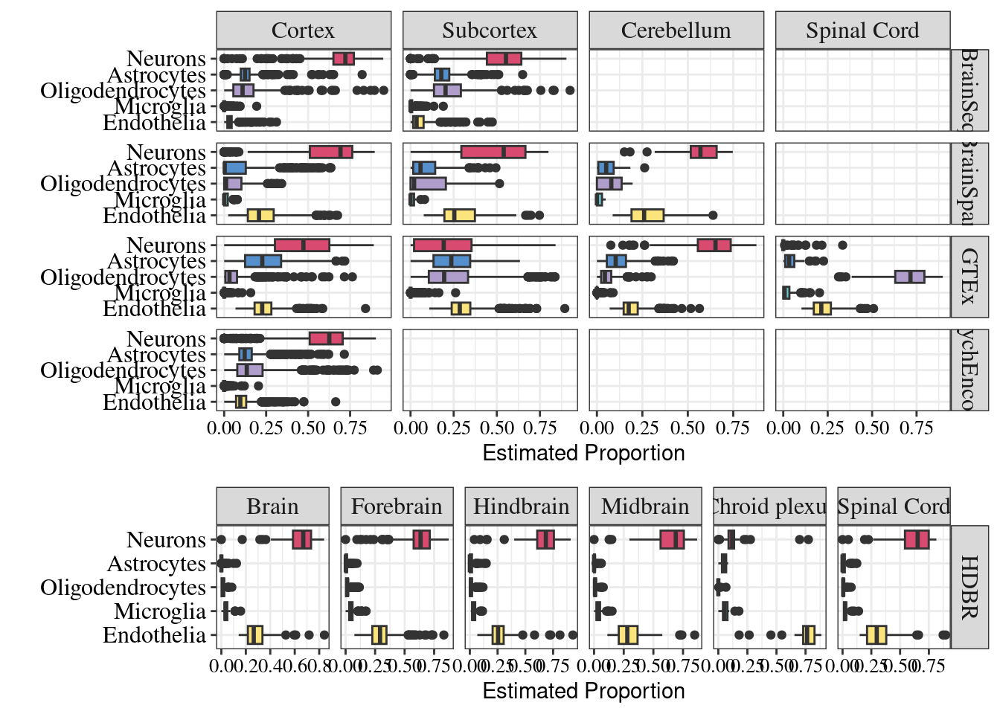
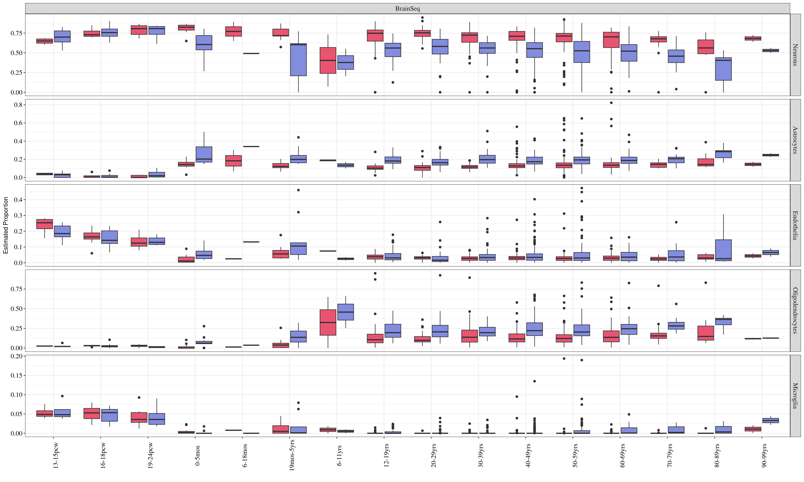
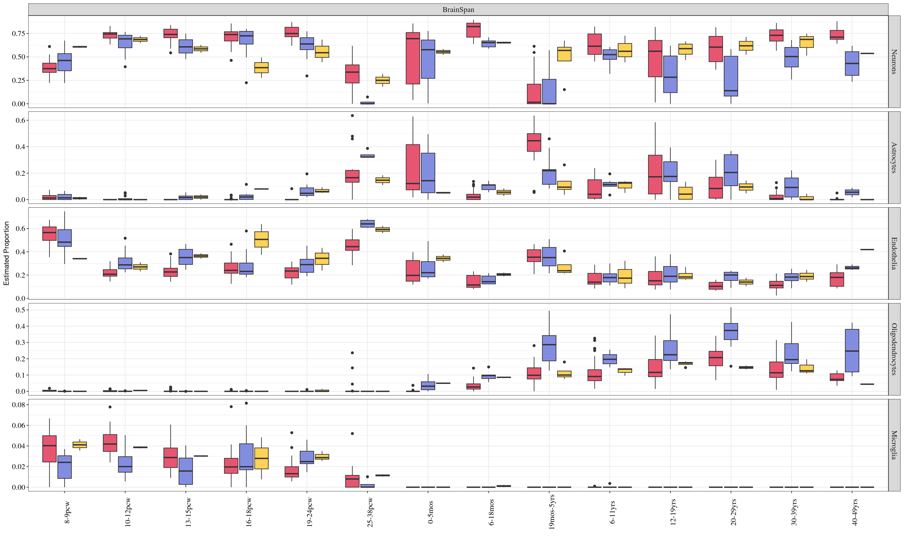
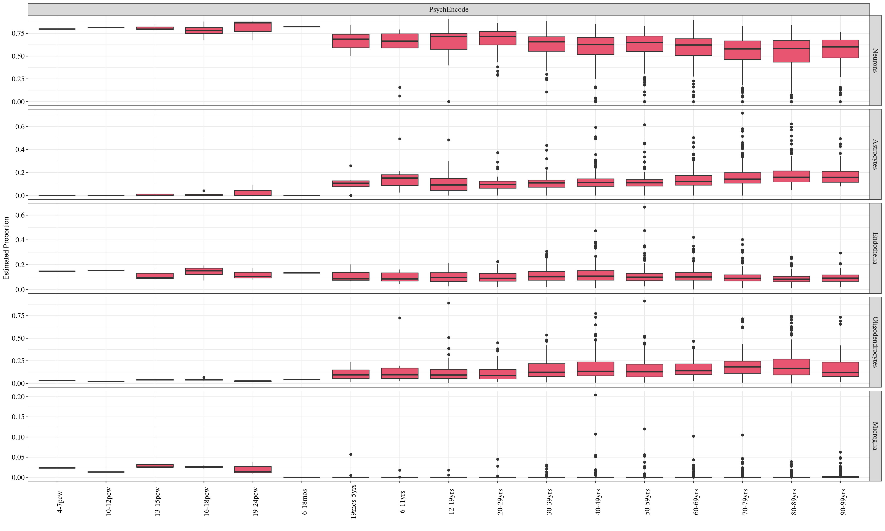
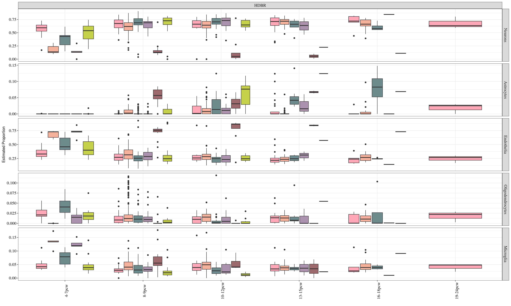
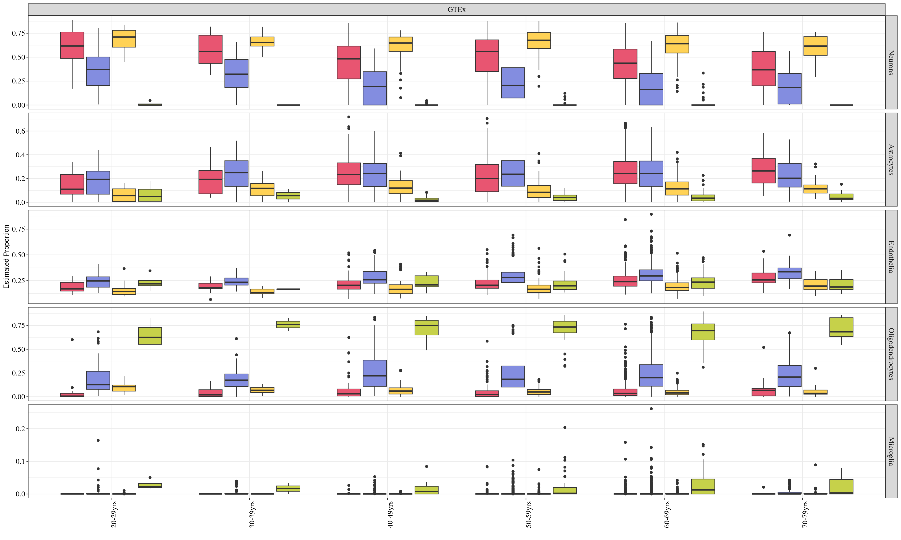
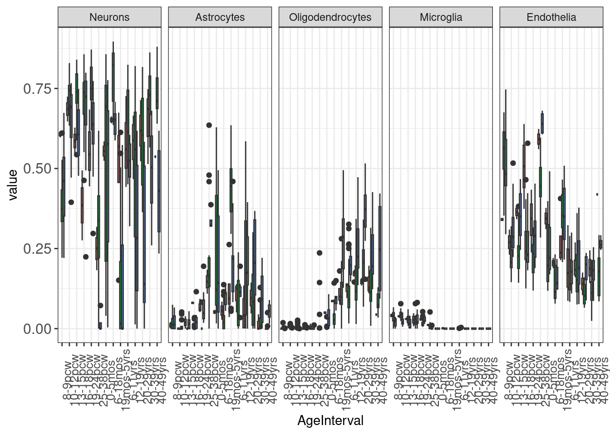
R version 4.3.3 (2024-02-29)
Platform: x86_64-pc-linux-gnu (64-bit)
Running under: Ubuntu 22.04.4 LTS
Matrix products: default
BLAS: /usr/lib/x86_64-linux-gnu/blas/libblas.so.3.10.0
LAPACK: /usr/lib/x86_64-linux-gnu/lapack/liblapack.so.3.10.0
locale:
[1] LC_CTYPE=en_AU.UTF-8 LC_NUMERIC=C
[3] LC_TIME=en_AU.UTF-8 LC_COLLATE=en_AU.UTF-8
[5] LC_MONETARY=en_AU.UTF-8 LC_MESSAGES=en_AU.UTF-8
[7] LC_PAPER=en_AU.UTF-8 LC_NAME=C
[9] LC_ADDRESS=C LC_TELEPHONE=C
[11] LC_MEASUREMENT=en_AU.UTF-8 LC_IDENTIFICATION=C
time zone: Australia/Adelaide
tzcode source: system (glibc)
attached base packages:
[1] parallel grid stats4 tools stats graphics grDevices
[8] utils datasets methods base
other attached packages:
[1] firatheme_0.2.4 Metrics_0.1.4
[3] naniar_1.0.0 glmpca_0.2.0
[5] broom_1.0.5 cowplot_1.1.2
[7] glue_1.7.0 ggfortify_0.4.16
[9] stargazer_5.2.3 AnnotationHub_3.10.0
[11] BiocFileCache_2.10.1 dbplyr_2.4.0
[13] singscore_1.22.0 EnsDb.Hsapiens.v86_2.99.0
[15] ensembldb_2.26.0 AnnotationFilter_1.26.0
[17] DT_0.31 variancePartition_1.32.2
[19] BiocParallel_1.36.0 gridExtra_2.3
[21] ggvenn_0.1.10 recount3_1.12.0
[23] e1071_1.7-14 DeconRNASeq_1.44.0
[25] pcaMethods_1.94.0 limSolve_1.5.7
[27] DTWBI_1.1 ModelMetrics_1.2.2.2
[29] preprocessCore_1.64.0 pander_0.6.5
[31] dtangle_2.0.9 SummarizedExperiment_1.32.0
[33] MatrixGenerics_1.14.0 matrixStats_1.2.0
[35] GenomicFeatures_1.54.1 AnnotationDbi_1.64.1
[37] Biobase_2.62.0 GenomicRanges_1.54.1
[39] GenomeInfoDb_1.38.5 IRanges_2.36.0
[41] S4Vectors_0.40.2 BiocGenerics_0.48.1
[43] biomaRt_2.58.0 plyr_1.8.9
[45] edgeR_4.0.11 limma_3.58.1
[47] corrplot_0.92 lubridate_1.9.3
[49] forcats_1.0.0 purrr_1.0.2
[51] readr_2.1.5 tidyverse_2.0.0
[53] stringr_1.5.1 tidyr_1.3.0
[55] scales_1.3.0 data.table_1.14.10
[57] readxl_1.4.3 tibble_3.2.1
[59] magrittr_2.0.3 reshape2_1.4.4
[61] ggplot2_3.4.4 dplyr_1.1.4
[63] workflowr_1.7.1
loaded via a namespace (and not attached):
[1] fs_1.6.3 ProtGenerics_1.34.0
[3] bitops_1.0-7 httr_1.4.7
[5] numDeriv_2016.8-1.1 backports_1.4.1
[7] utf8_1.2.4 R6_2.5.1
[9] lazyeval_0.2.2 withr_3.0.0
[11] prettyunits_1.2.0 cli_3.6.2
[13] labeling_0.4.3 entropy_1.3.1
[15] sass_0.4.8 mvtnorm_1.2-4
[17] proxy_0.4-27 dtw_1.23-1
[19] Rsamtools_2.18.0 R.utils_2.12.3
[21] sessioninfo_1.2.2 rstudioapi_0.15.0
[23] RSQLite_2.3.5 generics_0.1.3
[25] BiocIO_1.12.0 gtools_3.9.5
[27] Matrix_1.6-5 fansi_1.0.6
[29] abind_1.4-5 R.methodsS3_1.8.2
[31] lifecycle_1.0.4 whisker_0.4.1
[33] yaml_2.3.8 gplots_3.1.3
[35] SparseArray_1.2.3 blob_1.2.4
[37] promises_1.2.1 crayon_1.5.2
[39] lattice_0.22-5 annotate_1.80.0
[41] KEGGREST_1.42.0 pillar_1.9.0
[43] knitr_1.45 rjson_0.2.21
[45] boot_1.3-28.1 corpcor_1.6.10
[47] lpSolve_5.6.20 codetools_0.2-19
[49] getPass_0.2-4 vctrs_0.6.5
[51] png_0.1-8 Rdpack_2.6
[53] cellranger_1.1.0 gtable_0.3.4
[55] cachem_1.0.8 xfun_0.41
[57] mime_0.12 rbibutils_2.2.16
[59] S4Arrays_1.2.0 iterators_1.0.14
[61] statmod_1.5.0 ellipsis_0.3.2
[63] interactiveDisplayBase_1.40.0 lsa_0.73.3
[65] nlme_3.1-164 pbkrtest_0.5.2
[67] bit64_4.0.5 progress_1.2.3
[69] EnvStats_2.8.1 filelock_1.0.3
[71] rprojroot_2.0.4 SnowballC_0.7.1
[73] bslib_0.6.1 KernSmooth_2.23-22
[75] colorspace_2.1-0 DBI_1.2.1
[77] tidyselect_1.2.0 processx_3.8.3
[79] extrafontdb_1.0 bit_4.0.5
[81] compiler_4.3.3 curl_5.2.0
[83] git2r_0.33.0 graph_1.80.0
[85] xml2_1.3.6 DelayedArray_0.28.0
[87] rtracklayer_1.62.0 caTools_1.18.2
[89] remaCor_0.0.16 quadprog_1.5-8
[91] callr_3.7.3 rappdirs_0.3.3
[93] digest_0.6.34 minqa_1.2.6
[95] rmarkdown_2.25 aod_1.3.3
[97] XVector_0.42.0 RhpcBLASctl_0.23-42
[99] htmltools_0.5.7 pkgconfig_2.0.3
[101] extrafont_0.19 lme4_1.1-35.1
[103] highr_0.10 fastmap_1.1.1
[105] rlang_1.1.3 htmlwidgets_1.6.4
[107] shiny_1.8.0 farver_2.1.1
[109] jquerylib_0.1.4 jsonlite_1.8.8
[111] R.oo_1.25.0 RCurl_1.98-1.14
[113] rlist_0.4.6.2 GenomeInfoDbData_1.2.11
[115] munsell_0.5.0 Rcpp_1.0.12
[117] visdat_0.6.0 stringi_1.8.3
[119] zlibbioc_1.48.0 MASS_7.3-60.0.1
[121] Biostrings_2.70.1 splines_4.3.3
[123] hms_1.1.3 locfit_1.5-9.8
[125] ps_1.7.6 BiocVersion_3.18.1
[127] XML_3.99-0.16 evaluate_0.23
[129] BiocManager_1.30.22 nloptr_2.0.3
[131] tzdb_0.4.0 httpuv_1.6.13
[133] Rttf2pt1_1.3.12 xtable_1.8-4
[135] restfulr_0.0.15 fANCOVA_0.6-1
[137] later_1.3.2 class_7.3-22
[139] lmerTest_3.1-3 memoise_2.0.1
[141] GenomicAlignments_1.38.2 timechange_0.3.0
[143] GSEABase_1.64.0 here_1.0.1